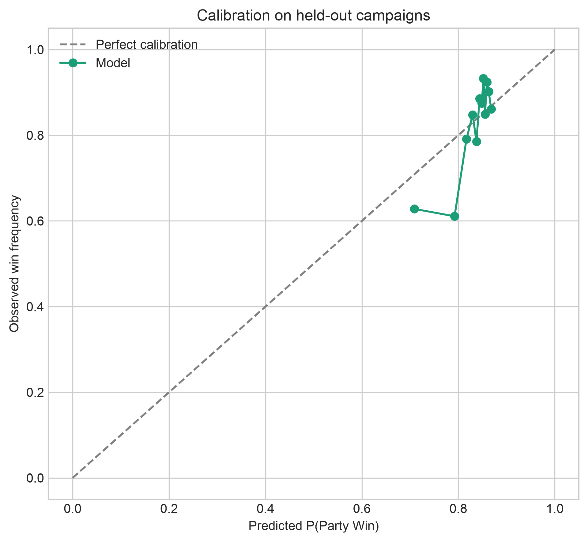
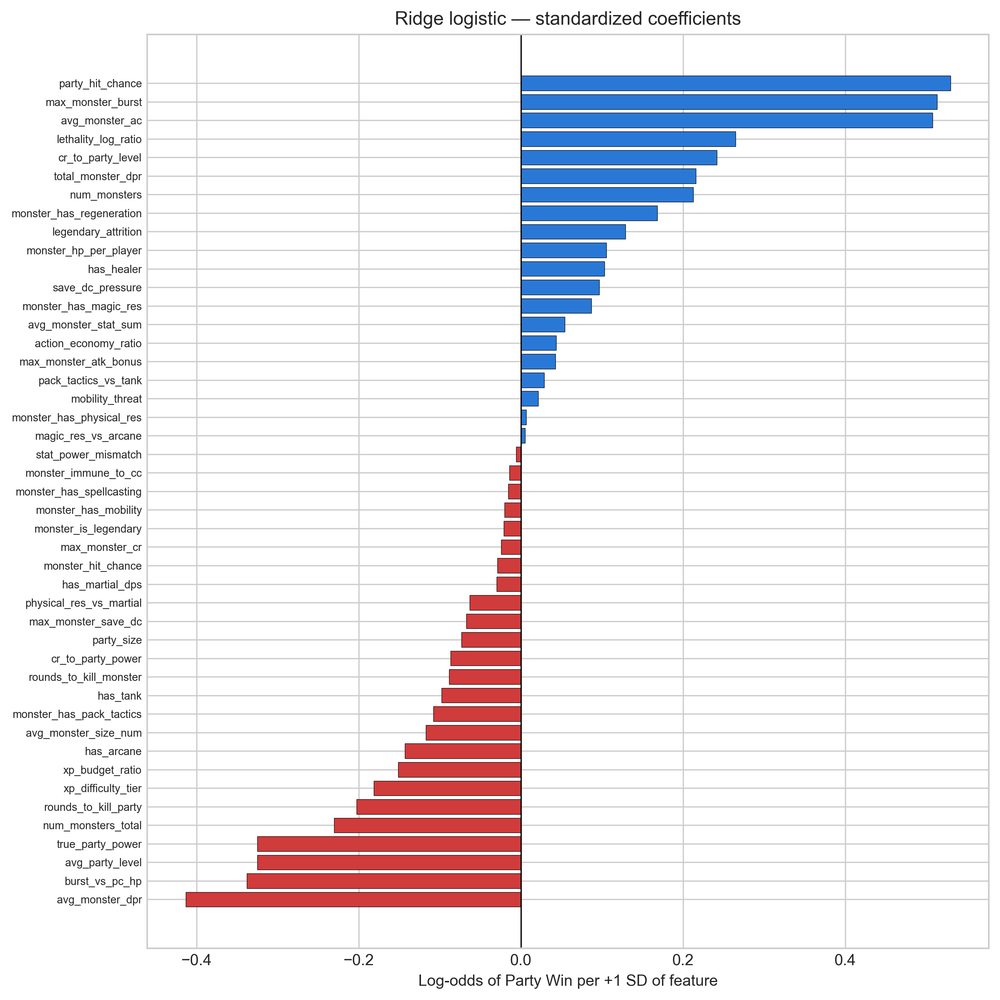

SAPIENZA UNIVERSITÀ DI ROMA · STATISTICAL MACHINE LEARNING
What 34,907 real battles (and 490,640 simulated ones)
say about how dangerous a monster really is.
Daniele · Francesca · Stefano · Antonietta
dnd-appraising.streamlit.app · github.com/danpinocontrollino/project-dnd
Presenter: Daniele
Relevant stats — HP (how much damage it absorbs) · AC (how hard it is to hit: d20 + bonus ≥ AC) · DPR (average damage per round) · burst (its single scariest action) · save DC (how hard its effects are to resist).
Why 65%? It is a choice: the app exposes it as a slider (0.50–0.90). Real tables win 83% of fights, so ~0.85 ≈ “typical curated encounter” and 0.55 ≈ “a true coin flip”.
Per-player XP thresholds from the DMG's own table, ×4 players; Super-Deadly (≥ 2× Deadly) is our site's extension.
Presenter: Francesca
Dataset: FIREBALL — Zhu et al., “A Dataset of Dungeons and Dragons Actual-Play with Structured Game State Information”, ACL 2023. We use the filtered combat extracts; parsing, joining and aggregation are ours (parse_fireball.py).
+9 to hit, 12 (2d6+5), “makes three attacks”, DC 14, spell lists.+9 to hit→ attack bonus (max across actions)
12 (2d6 + 5)→ printed average damage; riders summed, “or” alternatives take the max
makes three attacks→ multiattack count × mean per-attack damage = sustained DPR
DC 18 … on a failed save→ save-based action = burst candidate, excluded from DPR
power word kill→ spell list scanned against a PHB damage table (→ burst 100)
burst_vs_pc_hp — can one action delete a hero from full health?Presenter: Stefano

num_monsters, total_dpr, burst all positive; avg_party_level negative — “stronger parties lose more”, because stronger parties are served harder content. Selection confounding, visible to the naked eye.
| Contender (identical grouped CV) | AUC ± sd | Brier | Verdict |
|---|---|---|---|
| Ridge logistic (Lec 04+05) | 0.655 ± 0.031 | 0.136 | best risk — fails interventional sanity |
| RFF kernel logistic (Lec 06) | 0.624 ± 0.013 | 0.142 | kernel machine at n≈28k, no edge here |
| XGBoost + monotone constraints | 0.614 ± 0.033 | 0.141 | deployed — decision-grade behavior |
Presenter: Antonietta
predict_win_for_parties().Binomial-weighted logistic fit: σ(1.63·TTK − 3.98) replaces σ(2.197·TTK − 4.394). The hand guess was too generous exactly in the 2–3-round zone; inert above ≈ 3.7 rounds, where training data is trustworthy.
Curve = P(win) for a balanced party of 4, levels 1–20, from true_lethality_model.pkl with dominance + survival guard. Dashed line = 65% target. Watch the crossing point walk right — and vanish at 8+.
Few hard cells → +0.32 is directional, stated as such. Companion OOD grid (24 cells): extremes agree perfectly — HP×20 clones win ≈ 0.000–0.003 of deathmatches, matching our beyond deadly — while fine mid-range ordering is only moderate (Spearman ρ = 0.54): verdicts validated, micro-ranking beyond either system's resolution.
Presenter: Daniele
dnd-appraising.streamlit.appmain — what you see is this repo's HEADmake verify) · bootstrap CIs on every metric · append-only experiments.jsonl + persisted Optuna study · pinned environment · one-command pipeline (make retrain).battlecast_bridge/PROVENANCE.md.Questions welcome — or bring us a monster to appraise.
click to roll for questions
dnd-appraising.streamlit.app · github.com/danpinocontrollino/project-dnd